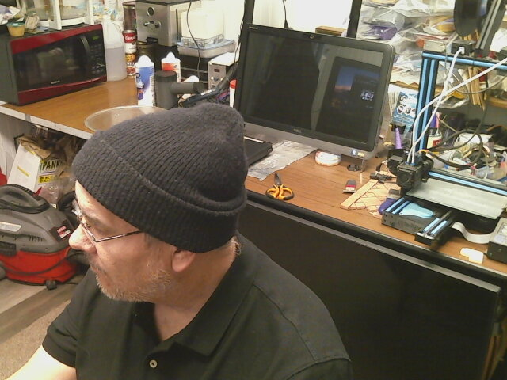

A man with a beard and glasses smiles for the camera while wearing a necklace. he is sitting at a desk in a cluttered workspace. there is a 3d printer to his right. the man is likely working on a project or hobby.
 A man wearing a black beanie sits in front of a computer monitor and a 3d printer. he looks tired. maybe it's the 3d printing.